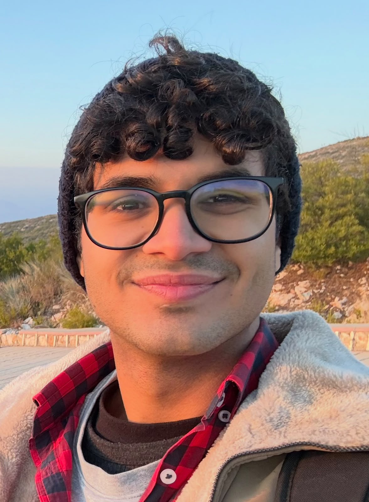

Who am I?

Afshad Y. Sidhwa
CS Senior at Habib University
I am interested in AI and software engineering, specifically how we can tie in concepts like DL, RL, ML into applicable usecases in the world, and how we can continue towards moving for innovation for a better future.Entering senior year is intimidating; coming off a jam-packed summer, filled with research at university, as well as personal challenges, I am excited for the path ahead.
Programming/Web Language Skills
| Skills |
Level |
| Python |
Advanced |
| C++ |
Intermediate |
| HTML |
Beginner |
| JavaScript |
Beginner |
Hobbies
- Music:
Outside of academics, I am very passionate about music; a fanatic and enthusiast for all genres, I play the piano and guitar, too. In fact, I am part of a fundraising piano ensemble, Harmony in Helping Hands.
- Sports and fitness:
When I don't have my headphones on, I'm on the volleyball court, where I took my talents to the semi-professional level, earlier this year. I enjoy staying active and going to the gym and for runs.